Ceph integration with oVirt using Cinder
- Nir Soffer <nsoffer@redhat.com>
- Senior Software Engineer, RHEV Storage
- DevConf.cz 2016

Overview
- Introduction
- oVirt traditional storage
- ★ New: Ceph storage ★
- Keeping secrets
- Live snapshot
- Future directions
Introduction
About oVirt
- Virtualization platform built on top of KVM, Qemu, Libvirt
- Manage virtual machines, storage, networks
oVirt architecture

Ceph in a nutshell
What is Cinder?
OpenStack Java SDK
Focusing on the host side
For more information on the engine side and cinder integration, see Maor Lipchuk's talk from FOSDEM 2016 Managing Ceph through Cinder using oVirt.

oVirt traditional storage
Block storage
- iSCSI
- Fibre Channel
Block storage domain
A VG, special LVs for metadata, locking, messaging.
# lvs -o name,attr,size 6acaac02-7e7d-...-70e07d96581d
LV Attr LSize
56b25c4a-085f-406e-8a2e-acb06a03d0cc -wi-a----- 128.00m
78f22775-916c-4e72-8c5b-9917734b26da -wi-a----- 4.50g
c00fd591-f85e-4572-b82e-35c542e383a7 -wi-a----- 128.00m
ids -wi-ao---- 128.00m
inbox -wi-a----- 128.00m
leases -wi-a----- 2.00g
master -wi-ao---- 1.00g
metadata -wi-a----- 512.00m
outbox -wi-a----- 128.00m
Block Volume
- /dev/vgname/lvname (Qemu image)
- /dev/vgname/lvname (LV)
- vgname (VG)
- /dev/mapper/guid (multipath device)
- /dev/sda (SCSI device)
- iSCSI or FC
Block storage problems
- Scale (350 LVs per VG)
- Complex
- Hard to manage
- Timeouts (much better since EL 7.2)
- QOS (for storage operations)
Block storage thin provisioning
- Monitor disk watermark via Libvirt
- Extend LV via SPM
- Resume VM if needed
- Rinse and repeat...
Block thin provisioning problems
- Scale (polling)
- Complex
- Slow (VM may pause)
- Single point of failure (SPM)
File storage
- NFS
- GlusterFS
- POSIX
- Local FS
File storage domain
A directory on a mounted filesystem
# ls -lh /rhev/data-center/mnt/example.com:_export_data/869...783
total 4.0K
drwxr-xr-x. 2 vdsm kvm 69 Jan 28 22:56 dom_md
drwxr-xr-x. 7 vdsm kvm 4.0K Jan 23 19:13 images
drwxr-xr-x. 2 vdsm kvm 6 Jan 28 22:56 master
File volume
Files in the image directory
# ls -lh /rhev/data-center/mnt/example.com:_export_data/869...783/images/24c...57c
total 1.7G
-rw-rw----. 1 vdsm kvm 1.7G Dec 4 15:52 1f6...e06
-rw-rw----. 1 vdsm kvm 1.0M Dec 4 15:49 1f6...e06.lease
-rw-r--r--. 1 vdsm kvm 309 Dec 4 15:52 1f6...e06.meta
File storage thin provisioning
(file system handles it)
File storage problems
- Overhead
- Timeouts (ioprocess)
- No QOS (for storage operations)
- Reliability
Snapshots
It's QCOW all the way down

Example: taking a snapshot
Example: taking a snapshot
Example: taking a snapshot
Example: taking a snapshot
Snapshots problems
- Performance
- Scale (on block storage)
- Difficult to manage
Live merge
Extremely complicated - we will not talk about it.
See Adam Litke's talk "Thanks for Live Snapshots, Where's Live Merge?" from KVM Forum 2014.
★ New: Ceph storage ★
Ceph integration from bird's view

Ceph storage domain
- Nothing on host
- Cinder provider on Engine side
- Only Ceph supported for now
Ceph volume
<disk type='network' device='disk'>
<source protocol='rbd' name='pool/volume'>
<host name='10.0.1.1' port='6789'/>
<host name='10.0.1.2' port='6789'/>
<host name='10.0.1.3' port='6789'/>
</source>
<auth username="cinder">
<secret type="ceph" uuid="ec5...236"/>
</auth>
</disk>
Ceph snapshots
- Nothing on the host - transparent
- Using Cinder APIs on Engine side, via OpenStack Java SDK
Example: taking a Ceph snapshot
Example: taking a Ceph snapshot
Example: taking a Ceph snapshot
Example: taking a Ceph snapshot
Example: taking a Ceph snapshot
Live merge
(No such thing, just delete a snapshot)
Ceph storage benefits
- Highly available
- Scalable
- Cost effective
- Offloading
- Zero management (on host)
Ceph storage problems
- Feature incomplete
- Cinder and oVirt have different views on things
Keeping secrets
Cephx authentication
- Create a Ceph user and key for accessing Ceph volumes
TODO: creating auth keys in ceph
Configure Cinder ceph key
- Configure Cinder auth key/uuid
TODO: example from cinder configuration
Deploying Ceph keys in the cluster
- Deploy Ceph keyring on all hosts
- Persisting unencrypted keys is insecure
- This is not the oVirt user experience
# cat /etc/ceph/ceph.client.admin.keyring
[client.admin]
key = AQCj2YpRiAe6CxAA7/ETt7Hcl9IyxyYciVs47w==
Libvirt secrets
Libvirt provides secure way to store keys and passwords
3a27b133-abb2-...-bd0a4032866f
ovirt/3a27b133-abb2-...-bd0a4032866f
Adding ceph auth keys
- Engine provides now a secure way to store auth keys
- Add the same key/uuid from Cinder configuration to Engine

registerSecrets
TODO: registerSecrets api
unregisterSecrets
TODO: unregisterSecrets api
Registering secrets flow

Unregistering secrets flow

Live snapshot
Consistent snapshots
- Freeze guest file systems
- Take a snapshot
- Thaw guest file systems
Requires qemu-guest-agent on Linux, VSS on Windows
Traditional snapshot flow
- Engine creates a new disk via Vdsm
- Engine creates snapshot via Vdsm
- Libvirt freezes guest file systems
- Libvirt switches VM to new disk
Freezing too late!
Engine must control the entire flow
Freeze guest file systems before creating Ceph disk snapshot
freeze
New verb using Libvirt's
virDomainFSFreeze
##
# @VM.freeze:
#
# Freeze mounted filesystems within the guest (hence
# guest agent may be required depending on hypervisor
# used).
#
# @vmID: The UUID of the VM
#
# Since: 4.17.0
##
snapshot
New frozen flag
##
# @VM.snapshot:
#
# Create a live snapshot of a VM's disks.
#
...
# @frozen: #optional Boolean value set to true if
# the vm is frozen and does not need to
# be freezed during the snapshot.
# (new in version 4.17.0)
#
# Since: 4.10.0
##
thaw
New verb using Libvirt's
virDomainFSThaw
##
# @VM.thaw:
#
# Thaw mounted filesystems within the guest (hence
# guest agent may be required depending on hypervisor
# used).
#
# @vmID: The UUID of the VM
#
# Since: 4.17.0
##
Live snapshot with Ceph disk
Engine now controls the entire flow
- Freeze VM via Vdsm
- Create disk snapshot via Cinder
- Take VM snapshot via Vdsm (frozen=True)
- Thaw VM via Vdsm
Live snapshot without Ceph disks
- Take snapshot via Vdsm (frozen=False)
- Vdsm will freeze and thaw guest file systems if needed
from __future__ import directions
Complete missing features
- Move disk
- Live storage migration
- Disaster recovery
- Monitoring
Stateless secret management
- No management is better than some
- Register temporary secret during VM startup
- Migrations will be a challenge
Cinder appliance
- Cinder does not provide the control we need
- Make our Cinder appliance, control it via an agent
- Hide Cinder behind engine UI
Drop Cinder?
- We don't need the middleman
- But we want the drivers...
Drop traditional storage?
Hard to modify, easy to break
Questions?
Join us
- Project site
- http://ovirt.org/
- Code review
- https://gerrit.ovirt.org/
- oVirt github
- https://github.com/ovirt/
- Mailing lists
- http://lists.ovirt.org/
- IRC
- #ovirt@OFTC, #vdsm@freenode